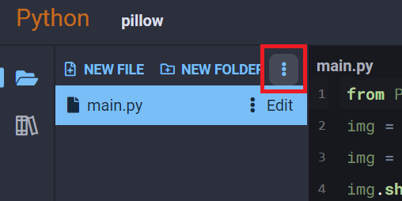
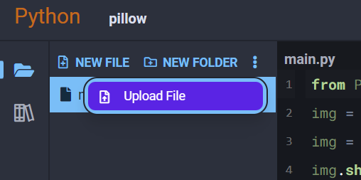
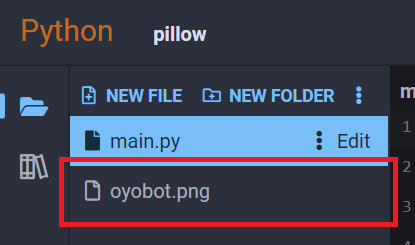
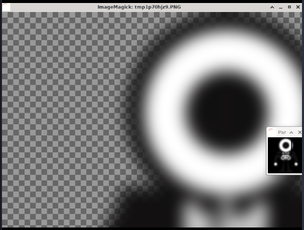
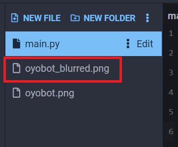
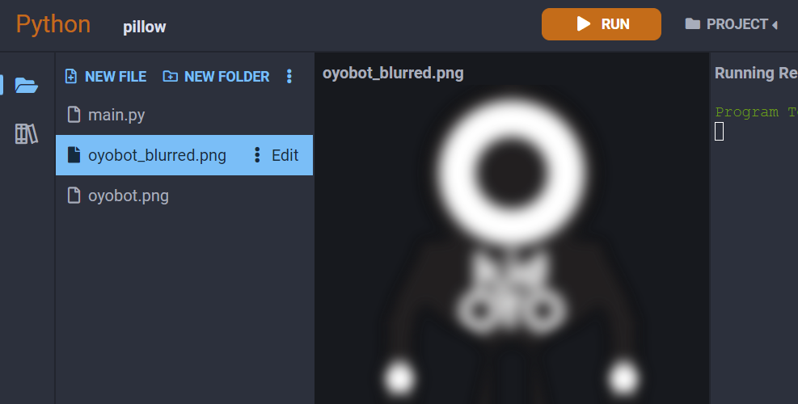

Pillow
Pillow is an image processing library for Python. It enables you to load pictures for viewing and editing, perform transformations, and apply filters to them.
Examples
Upload an Image to Your Project
The first thing we need to do to use this package is have an image to work with. We're going to use an image of OYObot in the following examples, click here to download a copy.
{kind=link}
After it's downloaded, open up the Python3 Editor and select Upload File from the dropdown at the top of your project's file list:


Find the picture you downloaded in your file browser, then confirm the upload was successful by finding the image in your project's file list:

Get Image Info
Pillow is able to read metadata from an image it opens, and provide phsyical properties like its dimensions and format:
from PIL import Image
img = Image.open('oyobot.png')
# print out image info
print(f'filename: {img.filename}')
print(f'dimensions: {img.width}x{img.height}')
print(f'format: {img.format}')
Output:
filename: oyobot.png
dimensions: 1200x1200
format: PNG
Render Image
We can render the image by calling the show() method of the image:
from PIL import Image
img = Image.open('oyobot.png')
img.show()
You will get an ImageMagick window rendered to the right of your code that looks like this:
You can use your mouse and keyboard to interact with this window. The second smaller window allows you to pan around the image by clicking and dragging since it will most likely be too big to fit on one screen.
Apply a Filter to an Image
We can also use Pillow to apply various filters and transforms to images. Here's a simple example where we apply a gaussian blur to our OYObot picture:
from PIL import Image, ImageFilter
img = Image.open('oyobot.png')
img = img.filter(ImageFilter.GaussianBlur(20))
img.show()
You will get an ImageMagick window rendered to the right of your code that looks like this:

Save Image After Filtering
If you want to apply your filters to an image and then save it afterwards, we can do that with the save() method:
from PIL import Image, ImageFilter
img = Image.open('oyobot.png')
img = img.filter(ImageFilter.GaussianBlur(20))
# make sure this filename is different, otherwise you will overwrite your
# original image!
img.save('oyobot_blurred.png')
You will see that the file will appear automatically to the left of your code in your projects file list:

From here, you can simply click on the picture in your file list to open it and see a preview directly in your editor window:

Reference
- Pillow at pillow.readthedocs.io